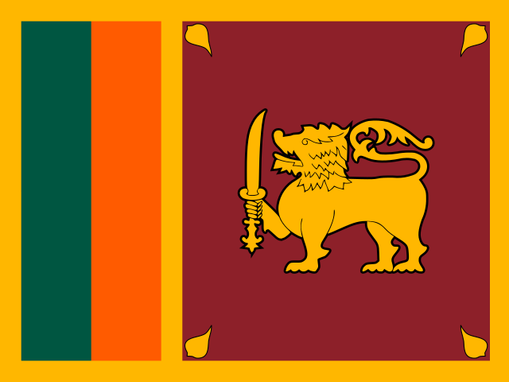
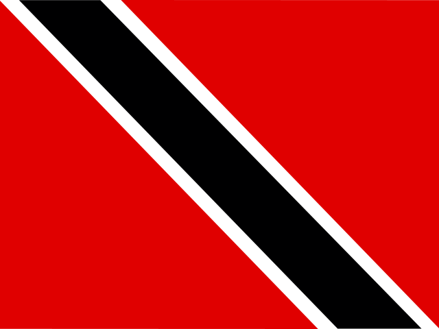

Question 121Verified completed result

Flag / Country🟩 Independent
Your answer: denmarkCorrect: Denmark
Capital🟩 Independent
Your answer: copenhagenCorrect: Copenhagen
Language🟩 Independent
Your answer: danishCorrect: Danish
Batch 13 · Q121–Q130 · 19 October 2026 · 30/30 Independent
| Score | Flags / Country | Capitals | Languages |
|---|---|---|---|
| Pure | 10/10 (100%) | 10/10 (100%) | 10/10 (100%) |
| Pure + Assisted | 10/10 (100%) | 10/10 (100%) | 10/10 (100%) |
| Independent | 10 | 10 | 10 |
| Assisted | 0 | 0 | 0 |
| Wrong | 0 | 0 | 0 |
| Cancelled | 0 | 0 | 0 |
| Score | Flags / Country | Capitals | Languages |
|---|---|---|---|
| Pure | 130/130 (100%) | 130/130 (100%) | 130/130 (100%) |
| Pure + Assisted | 130/130 (100%) | 130/130 (100%) | 130/130 (100%) |
| Independent | 130 | 130 | 130 |
| Assisted | 0 | 0 | 0 |
| Wrong | 0 | 0 | 0 |
| Cancelled | 0 | 0 | 0 |
Hungarian Rhapsody is an unmistakable reference to the Hungarian language, with a classical-music joke; no clue used.


vanutu recognized as Vanuatu.

Colombo accepted under multi-capital rule; Tamil recognized from tamil-sri lankan.

timor liste/dilli/portguese accepted phonetic variants.

finish accepted for Finnish.

spansish accepted for Spanish.

balompan accepted for Belmopan under established historical precedent.

| Q | Your Country | Correct Country | Flag | Your Capital | Correct Capital | Capital | Your Language | Correct Language(s) | Language |
|---|---|---|---|---|---|---|---|---|---|
| 121 | denmark | Denmark | 🟩 Independent | copenhagen | Copenhagen | 🟩 Independent | danish | Danish | 🟩 Independent |
| 122 | hungary | Hungary | 🟩 Independent | budapest | Budapest | 🟩 Independent | hungarian rhapsody ( if u know classical u will know) | Hungarian | 🟩 Independent |
| 123 | qatar | Qatar | 🟩 Independent | doha | Doha | 🟩 Independent | arabic | Arabic | 🟩 Independent |
| 124 | vanutu | Vanuatu | 🟩 Independent | port vila | Port Vila | 🟩 Independent | english | Bislama; English; French | 🟩 Independent |
| 125 | sri lanka | Sri Lanka | 🟩 Independent | colombo | Sri Jayawardenepura Kotte / Colombo | 🟩 Independent | tamil-sri lankan | Sinhala; Tamil | 🟩 Independent |
| 126 | timor liste | Timor-Leste | 🟩 Independent | dilli | Dili | 🟩 Independent | portguese | Tetum; Portuguese | 🟩 Independent |
| 127 | finland | Finland | 🟩 Independent | helsinki | Helsinki | 🟩 Independent | finish | Finnish; Swedish | 🟩 Independent |
| 128 | peru | Peru | 🟩 Independent | lima | Lima | 🟩 Independent | spansish | Spanish; Quechua; Aymara (regional) | 🟩 Independent |
| 129 | belize | Belize | 🟩 Independent | balompan | Belmopan | 🟩 Independent | english | English | 🟩 Independent |
| 130 | trinidad and tobago | Trinidad and Tobago | 🟩 Independent | port of spain | Port of Spain | 🟩 Independent | english | English | 🟩 Independent |
All 30 components Independent without clues. Hungarian Rhapsody recognized as an explicit Hungarian-language classical-music reference. Colombo and Tamil accepted for Sri Lanka; balompan accepted for Belize.
130 / 195 countries · Batch 13 of 20 complete · 65 remaining
Combined Pure 390/390: Flags 130/130; Capitals 130/130; Languages 130/130.